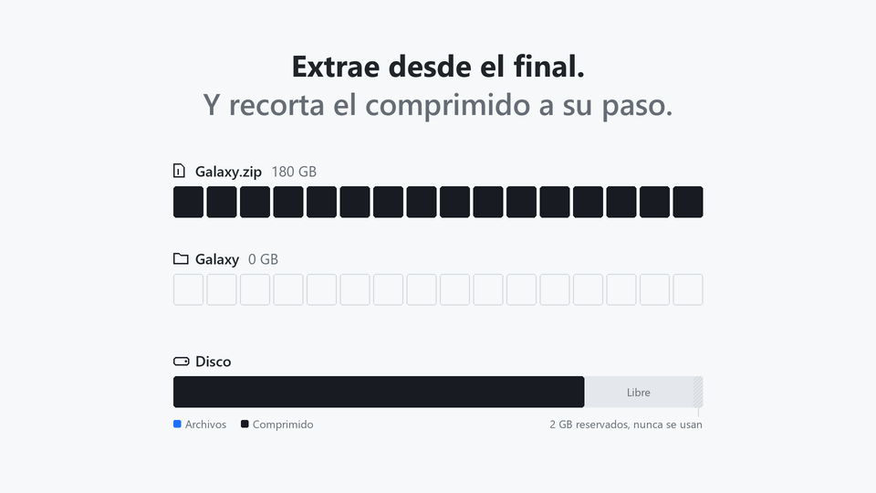

Extrae archivos enormes.
Sin necesitar el doble de disco.
MoltZip extrae archivos ZIP, 7z, RAR y tar en el sitio. Recorta el comprimido a medida que salen tus archivos, así solo necesitas espacio para los archivos, no para los archivos y el comprimido a la vez.
Gratis. Windows 10 y 11, 64 bits. También para Mac con Intel, en .deb, .rpm, MSI y portable, y como herramienta de línea de comandos.

Cómo funciona
Una descarga de 180 GB que ocupa 200 GB al extraerla necesita 380 GB con WinRAR, 7-Zip o unzip, porque el comprimido y los archivos existen al mismo tiempo. MoltZip necesita poco más de 200 GB.
- Comprueba antes de tocar nada. Simula toda la extracción para encontrar el momento que más espacio necesita y te dice si cabe.
- Extrae desde el final. Cada archivo se escribe, se comprueba su CRC-32 y se guarda en el disco.
- Recorta el comprimido detrás. Solo entonces esa parte se corta del comprimido y el espacio se reutiliza para los siguientes archivos.
Qué hace
Construido con pruebas que detienen la extracción en cada paso y comprueban el resultado. Viene más: .tar.xz, .tar.zst y .tar.bz2, relectura antes de cada corte, la app en español.
ZIP, 7z, RAR, tar, .tar.gz
ZIP64 y .exe autoextraíbles, 7z sólidos y divididos, RAR 5 y RAR 4 por volúmenes, partes .001. ZIP, 7z y RAR con contraseña.
Se pausa y continúa
Ctrl+C, un cuelgue o un corte de luz en cualquier momento: ábrelo otra vez y sigue donde quedó. O restaura el resto como un comprimido normal.
Nunca sobrescribe
Los archivos que ya existen se conservan, salvo que elijas reemplazar, omitir o conservar ambos para cada uno.
Rechaza comprimidos maliciosos
Rutas que escapan de la carpeta, entradas que se solapan y enlaces peligrosos se rechazan antes de borrar nada.
También conserva el comprimido
Si hay espacio para ambos, extrae de forma normal y consérvalo: --keep-archive o Extraer aquí (conservar).
Cualquier disco
NTFS, APFS, ext4, btrfs, XFS, y memorias USB exFAT y FAT32. Sin acceso a internet, sin telemetría.
Medido
Los mismos 200 MB de datos de un juego (21 archivos), comprimidos con las herramientas reales, extraídos en un disco de 220 MiB con unos 50 MB libres.
| Comprimido | unzip / 7-Zip | MoltZip |
|---|---|---|
| ZIP, 180 MB | Se quedó sin espacio en el archivo 6 de 21 | Terminó, cada archivo idéntico byte a byte |
| 7z, 10 bloques sólidos | Necesita 380 MB | Terminó en 0,64 s |
| 7z dividido en 5 volúmenes | Necesita 380 MB | Terminó, pico de 210 MB usados |
| tar, 200 MB | Necesita 400 MB | Terminó en 0,12 s |
Fedora 43, Intel Core i7-14700HX, SSD NVMe, caché de páginas caliente; un tmpfs de 220 MiB hizo de disco lleno.
Todas las descargas
Cada archivo tiene su suma .sha256 en la página de versiones. Verificar una descarga (en inglés).
| Sistema | App de escritorio y línea de comandos | Solo línea de comandos |
|---|---|---|
| Windows 10 y 11 | Instalador, MSI, zip portable | moltzip-x86_64-windows.zip |
| macOS, Apple Silicon | MoltZip-aarch64.dmg | moltzip-aarch64-macos.tar.gz |
| macOS, Intel | MoltZip-x86_64.dmg | moltzip-x86_64-macos.tar.gz |
| Linux x64 | AppImage, .deb, .rpm | moltzip-x86_64-linux.tar.gz |
| Linux ARM64 | moltzip-aarch64-linux.tar.gz |
O instala la herramienta de línea de comandos desde una terminal. Linux y macOS:
curl -fsSL https://raw.githubusercontent.com/morningstar-code/moltzip/main/install.sh | shWindows, en PowerShell:
irm https://raw.githubusercontent.com/morningstar-code/moltzip/main/install.ps1 | iexLuego moltzip check juego.zip te dice si cabe y moltzip extract juego.zip lo extrae. mz es el nombre corto.
Las descargas aún no tienen firma de código. En Windows elige Más información y luego Ejecutar de todas formas. En macOS, abre la app una vez y permítela en Configuración del Sistema, Privacidad y seguridad.
Preguntas
¿Es seguro? Borra mi comprimido.
Nada cambia hasta que el plan cabe. Cada archivo se escribe y se guarda en el disco antes de cortar la parte del comprimido que lo contiene, así que un cuelgue deja cada archivo extraído o todavía dentro del comprimido. Se verifica la suma de cada archivo y uno dañado detiene el proceso. Si no puedes volver a descargar el comprimido, usa --verify-first, o consérvalo con --keep-archive.
¿Cuánto espacio libre necesita?
Más o menos el tamaño de los archivos extraídos, más la pieza más grande que puede liberar de una vez: un archivo en ZIP, tar y RAR, un bloque sólido en 7z. Además reserva 2 GB libres. moltzip check muestra la cifra exacta sin cambiar nada.
¿Y si se cuelga o lo detengo?
Ejecuta el mismo comando o abre el mismo comprimido otra vez y continúa. Para abandonar, moltzip restore convierte lo que queda en un comprimido normal que cualquier programa abre.
¿Usa internet?
No. No tiene código ni bibliotecas de red, ni telemetría, ni cuentas. Su CI falla si alguna vez entra una en las dependencias.